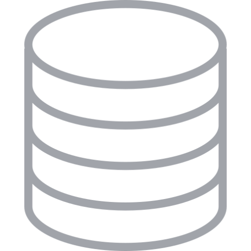

<ion-header id="header">
    <ion-toolbar color="primary">
        <ion-icon class="ion-padding" size="large" name="list-circle-outline" slot="start"></ion-icon>
        <ion-title text-capitalize>Mis Listas</ion-title>
        <ion-buttons slot="end">
            <ion-button (click)=abrirBuscador()>
                <ion-icon slot="icon-only" name="search-sharp"></ion-icon>
            </ion-button>
            <ion-button (click)="actionReceta()">
                <ion-icon slot="icon-only" ios="ellipsis-vertical" md="ellipsis-vertical"></ion-icon>
            </ion-button>
        </ion-buttons>
    </ion-toolbar>
</ion-header>

<ion-header id="buscador">
    <ion-toolbar color="primary">
        <ion-buttons slot="start" color="white" (click)=SalirHeaderAction()>
            <ion-back-button defaultHref="/"></ion-back-button>
        </ion-buttons>
        <ion-searchbar color="tertiary" animated (ionChange)="buscar($event)"></ion-searchbar>
    </ion-toolbar>
</ion-header>

<ion-header id="header-action">
    <ion-toolbar color="primary">
        <ion-buttons class="ion-padding" slot="start" color="white" (click)=SalirHeaderAction()>
            <ion-back-button defaultHref="/" text="Regresar"></ion-back-button>
        </ion-buttons>
        <ion-buttons slot="end">
            <ion-button shape="round" (click)="eliminarSeleccionados()">
                <ion-icon name="trash"></ion-icon>
            </ion-button>
            <ion-button shape="round" (click)="enviarDatos()">
                <ion-icon name="cart-sharp"></ion-icon>
            </ion-button>
        </ion-buttons>
    </ion-toolbar>
</ion-header>


<ion-content [fullscreen]="true">

    <ion-list *ngIf="contentLoaded">

        <ion-item id="item">
            <ion-checkbox color="primary" slot="start" [(ngModel)]="checkTodo" (click)=seleccionarTodo()></ion-checkbox>
            <ion-label>
                <h1>Seleccionar Todo</h1>
            </ion-label>
        </ion-item>

        <ion-item-sliding *ngFor="let registro of dataLocal.listas | filtro: textoBuscar; let i = index" #slidingItem>

            <ion-item (click)="abrirRegistro(registro, i)">
                <ion-checkbox color="primary" slot="start" id="checkLista" [checked]=checkIndividual [(ngModel)]="registro.selected"></ion-checkbox>
                <ion-label>
                    <h2 style="font-weight: 600;" id="myInput">{{ registro.lista }}</h2>
                    <p>{{ registro.created | date: 'medium'}}</p>
                </ion-label>
                <ion-badge color="primary" slot="end">{{registro.items.length}}</ion-badge>
                <ion-icon name="cart-sharp" color="medium" id="cart" *ngIf="registro.cart === true"></ion-icon>
            </ion-item>

            <ion-item-options side="end">
                <ion-item-option id="item-option" (click)="eliminarReceta( registro, i )" color="danger">
                    <ion-icon name="trash"></ion-icon>
                </ion-item-option>
                <ion-item-option id="item-option" (click)="editarLista(registro, i, slidingItem)" color="tertiary">
                    <ion-icon name="create"></ion-icon>
                </ion-item-option>
            </ion-item-options>

        </ion-item-sliding>

    </ion-list>

    <!-- Skeleton screen -->
    <ion-list *ngIf="!contentLoaded">

        <ion-item *ngFor="let registro of dataLocal.listas | filtro: textoBuscar; let i = index">
            <ion-skeleton-text animated slot="end" style="width: 5%;"></ion-skeleton-text>
            <ion-label>
                <h3>
                    <ion-skeleton-text animated style="width: 50%"></ion-skeleton-text>
                </h3>
                <p>
                    <ion-skeleton-text animated style="width: 60%"></ion-skeleton-text>
                </p>
            </ion-label>
        </ion-item>

    </ion-list>

    <div *ngIf="dataLocal.listas.length < 1 && contentLoaded" style="text-align: center; padding-top: 50%;">
        
        <p style="font-weight: bold; color: darkgray;">No hay datos</p>
    </div>

    <ion-fab horizontal="center" vertical="bottom" slot="fixed">
        <ion-fab-button color="medium" (click)="abrirModal()">
            <ion-icon name="add"></ion-icon>
        </ion-fab-button>
    </ion-fab>


</ion-content>